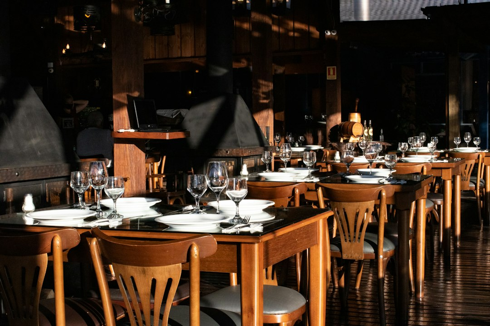

Automazione vs Manualità: Il Divario Competitivo per Ristoratori e Chef tra Menu Cartacei e Digitali

Automazione e Innovazione Digitale: La Nuova Frontiera per Ristoratori, Chef e Titolari di Trattorie, Pizzerie Gourmet e Agriturismi
- Il menu tradizionale cartaceo è sempre più ignorato e non valorizza i piatti.
- I costi elevati per comunicare la qualità con video professionali limitano la visibilità social.
- Locanda Digitale propone una suite AI per digitalizzare menu e creare video 3D facilmente, migliorando la presenza online senza abbonamenti.
Analisi Approfondita della Notizia e delle Implicazioni Operative
Nel contesto gastronomico attuale, il modo di presentare l’offerta di un ristorante o di un agriturismo è diventato cruciale per la competitività. La notizia recente conferma come le attività che ancora si affidano a menu cartacei di solo testo stiano perdendo terreno rispetto a quelle che investono in soluzioni digitali integrate per comunicare la qualità e l’esperienza culinaria offerta.
La comunicazione tradizionale, limitata a una lista stampata di piatti e prezzi, non riesce a trasmettere l’aspetto visivo, il valore e l’artigianalità delle preparazioni. Inoltre, la crescente importanza dei social network come canale di marketing richiede contenuti video e fotografici di alta qualità che però risultano spesso inaccessibili per i ristoratori a causa dei costi proibitivi di produzioni professionali.
Questo crea un significativo divario competitivo tra chi mantiene metodi manuali e chi adotta la digitalizzazione e l'automazione, diventando più attrattivo per la clientela moderna e incrementando il proprio fatturato.
Le Conseguenze e i Costi di Non Agire in Tempi Veloci
Il mantenimento di menu cartacei di solo testo porta inevitabilmente a diverse criticità operative e commerciali. Innanzitutto, i clienti tendono a ignorare menu poco attrattivi, limitando l'attenzione al prezzo più che alla qualità dei piatti proposti. Ciò si traduce in una riduzione della percezione del valore del ristorante e quindi in una perdita di margini.
In secondo luogo, la difficoltà nel comunicare efficacemente sui social si fa sentire pesantemente. Senza video di impatto e fotografie di qualità, i post social appaiono meno coinvolgenti e generano meno interazioni e prenotazioni online. I costi per videomaker e fotografi professionali, inoltre, spesso superano le capacità di investimento di realtà medio-piccole come trattorie, pizzerie o agriturismi, rallentandone la crescita digitale.
Rimanere ancorati a sistemi manuali significa perdere opportunità di visibilità, non sfruttare la viralità dei contenuti digitali e subire una diminuzione di competitività rispetto ai concorrenti che già hanno adottato soluzioni automatizzate efficaci e snelle.
Come Locanda Digitale Risolve il Problema con Tecnologia AI Integrata
Locanda Digitale di RM Studio si presenta come la risposta tecnologica naturale per superare questi limiti. Questa suite AI fornisce agli operatori della ristorazione una soluzione semplice, veloce e economicamente accessibile per digitalizzare l’esperienza culinaria e migliorare la comunicazione verso la clientela.
La piattaforma consente di trasformare foto reali dei piatti in spot video 3D verticali (formato 9:16) a 60 FPS, perfetti per essere utilizzati sui canali social come Instagram e TikTok, senza dover investire in videomaker esterni. In parallelo, digitalizza il menu cartaceo integrando fotografie ad alta definizione e QR Code da posizionare al tavolo, permettendo ai clienti di consultare un menu dinamico e coinvolgente attraverso il proprio smartphone.
Tutto ciò rende l’offerta gastronomica immediatamente più appetibile, aumentando la percezione qualitativa e l’engagement digitale, abbassando i costi e il tempo richiesti per una comunicazione di alto livello.
| Gestione Tradizionale | Con Locanda Digitale |
|---|---|
| Menu cartaceo statico, solo testo. | Menu digitale con fotografie HD integrate e QR Code al tavolo. |
| Contenuti social basati su foto statiche o video costosi. | Spot video 3D verticali dinamici generati da AI a partire da foto reali. |
| Costi elevati per servizi videomaker e fotografi professionali esterni. | Investimento una tantum promozionale senza abbonamento: €79 o €149. |
| Comunicazione limitata e poco attrattiva per il cliente finale. | Esperienza digitale coinvolgente che valorizza qualità e artigianalità. |
💡 Ti è stato utile questo approfondimento?
Condividilo con un collega o un amico del settore Ristoratori, Chef, Titolari di Trattorie, Pizzerie Gourmet e Agriturismi a cui potrebbe interessare!
FAQ - Domande Frequenti per i Professionisti della Ristorazione
1. Locanda Digitale richiede competenze tecniche avanzate per essere utilizzato?
No, la piattaforma è progettata per essere intuitiva e user-friendly anche per chi ha poca dimestichezza con la tecnologia. L’interfaccia guida passo passo nella creazione di video e menu digitali.
2. Come si integra il menu digitale con il take away e la presenza online?
Il menu digitalizzato con fotografie HD e QR Code può essere facilmente condiviso anche per ordini online, aumentando la coerenza della comunicazione sia in loco che fuori dal locale.
3. È possibile aggiornare i contenuti in qualsiasi momento?
Sì, non essendoci abbonamenti o vincoli, l’utente può aggiornare foto e video delle pietanze in modo autonomo e continuo, mantenendo sempre viva e aggiornata la comunicazione verso il cliente.
Inizia Subito
Social 3D Starter a €79 una tantum o Visual Menu Pro a €149. Nessun abbonamento.
Fonti Ufficiali e Risorse Esterne
Scopri l'Intelligenza Artificiale per la tua attività
Ottimizza i processi e aumenta le vendite con le soluzioni B2B di RM Studio.
Scopri Locanda Digitale